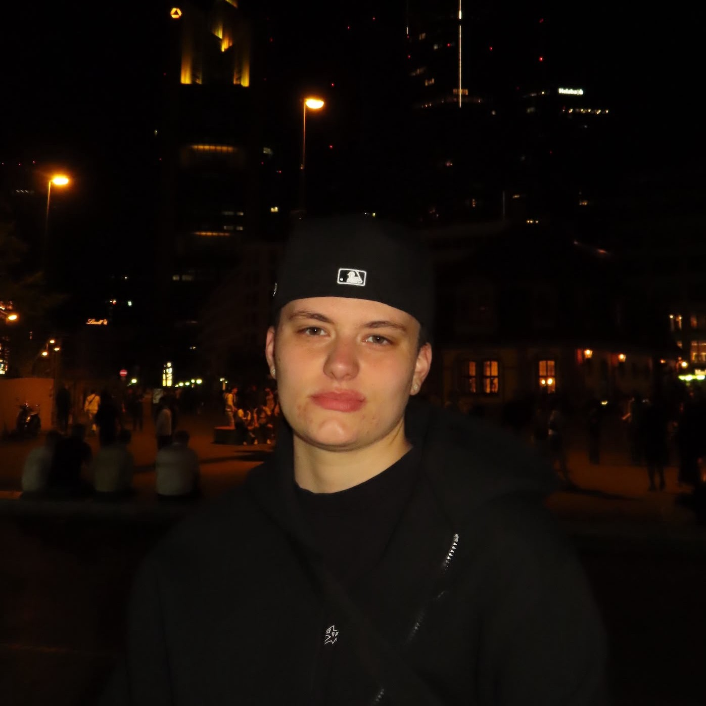

UNIVERSITY PROJECT
Insect’s Delegate: Brumble’s Journey
An educational VR experience for young audiences combining storytelling, exploration and interactive learning about insects and pollinators.
Antonela Matanović · XR Developer & Designer
B.A. Expanded Realities student at Darmstadt University of Applied Sciences, currently working at videoreality GmbH across XR prototyping, AI-driven immersive systems and interactive exhibition experiences.

SELECTED WORK
UNIVERSITY PROJECT
An educational VR experience for young audiences combining storytelling, exploration and interactive learning about insects and pollinators.
PROFESSIONAL WORK
Interactive media installation co-created for videoreality GmbH and exhibited at TimeLeapVR ArtWorld – Mona Lisa’s Geheimnis, Frankfurt.
UNIVERSITY PROJECT
A place-based mobile AR experience revealing the hidden geological history of the Spatschlucht through image tracking and interactive cross-section exploration.
ADDITIONAL PROJECTS
University project · Third-person game
Unity action-adventure game featuring melee combat, AI-driven enemies, exploration, NPC interaction and reusable gameplay systems.
University project · Desktop game
A complete desktop recreation of the classic Snake arcade game, developed in Processing using Java mode.
CAPABILITIES
01
02
03
04
EXPERIENCE

videoreality GmbH
Aug 2025 – Present · Work study · Hybrid
Supporting the development of internal tools and AI-driven systems for interactive museum and exhibition experiences. Focus on prototyping, pipeline integration, technical workflow development, system testing, and validation processes for production pipelines.
Jun 2025 – Jul 2026 · Work study · On-site
On-site operation, supervision, and maintenance of immersive installations in a large-scale exhibition blending VR, AI, and interactive art.
Feb 2025 – Jun 2025 · Internship · On-site
Development of interactive XR exhibition content as part of the Expanded Realities internship semester. Co-creator of Animal Garden, an interactive digital installation exhibited at TimeLeapVR ArtWorld. Testing and refinement of immersive experiences for exhibition use.

Darmstadt University of Applied Sciences
May 2026 – Present · Work study · Hybrid
Assisting with teaching-related and organisational tasks within the Media Department. Supporting tutorial coordination and programme-related operational activities in the Augmented and Virtual Reality Design programme.
Apr 2025 – Apr 2026 · Work study · Hybrid
Academic advising and peer support for students in the Augmented and Virtual Reality Design programme. Support with curriculum structure, study planning, and programme-specific requirements. Represented the programme at the h_da Premiere 2025 orientation event in Staatstheater Darmstadt.
ABOUT ME
I work across immersive storytelling, interaction design, real-time development and exhibition production. My practice connects technical implementation with clear visitor journeys and meaningful physical-digital experiences.
EDUCATION
Oct 2023 – Feb 2027
Darmstadt University of Applied Sciences
International, project-based programme taught in English, integrating artistic, technological, cultural, and methodological dimensions of immersive media production. Led by lecturers with industry backgrounds, the programme includes an internship semester and real-client projects. Facilities include a motion capture studio, VR/AR lab, film and sound studios, and a usability testing lab. 7 semesters · Dieburg, Germany.
Sep 2019 – Jun 2023
Katolički školski centar "Sveti Franjo" · Tuzla
CONTACT
I’m interested in XR, interactive installations, AR/VR prototyping and immersive storytelling opportunities.